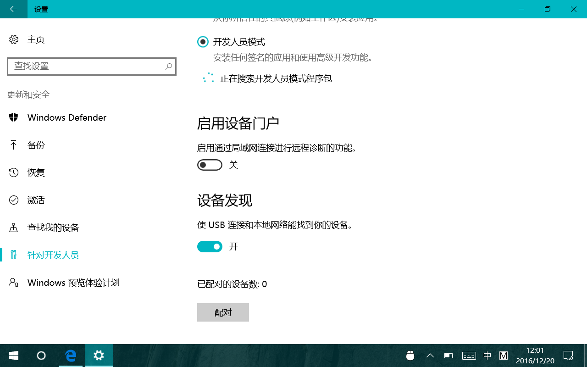
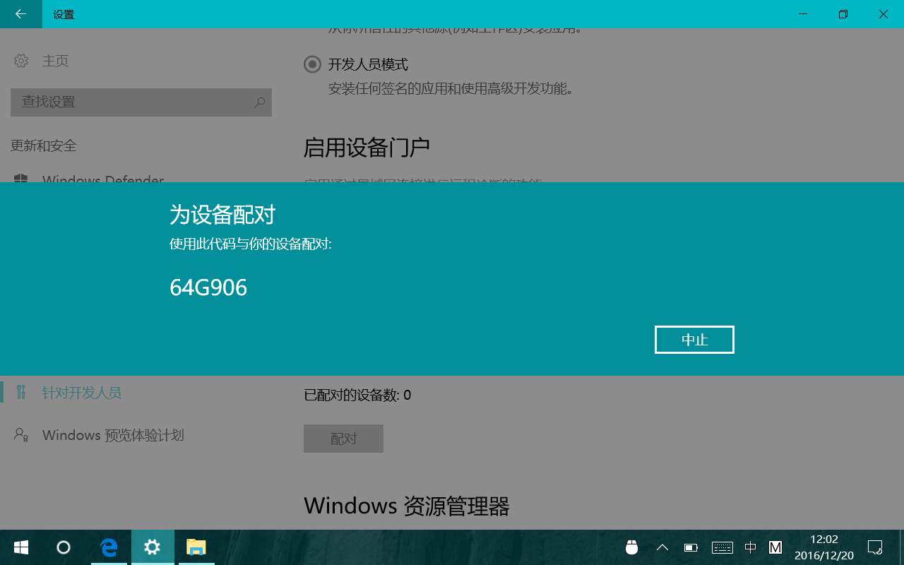
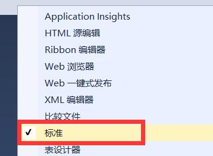
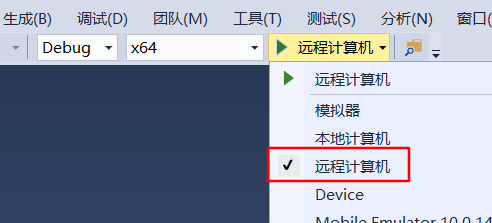
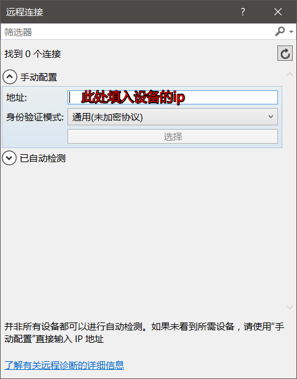
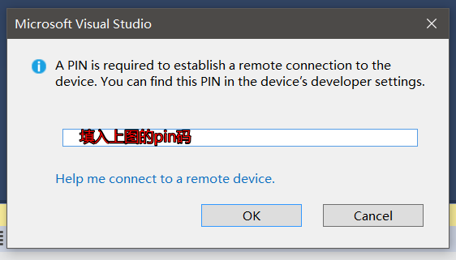
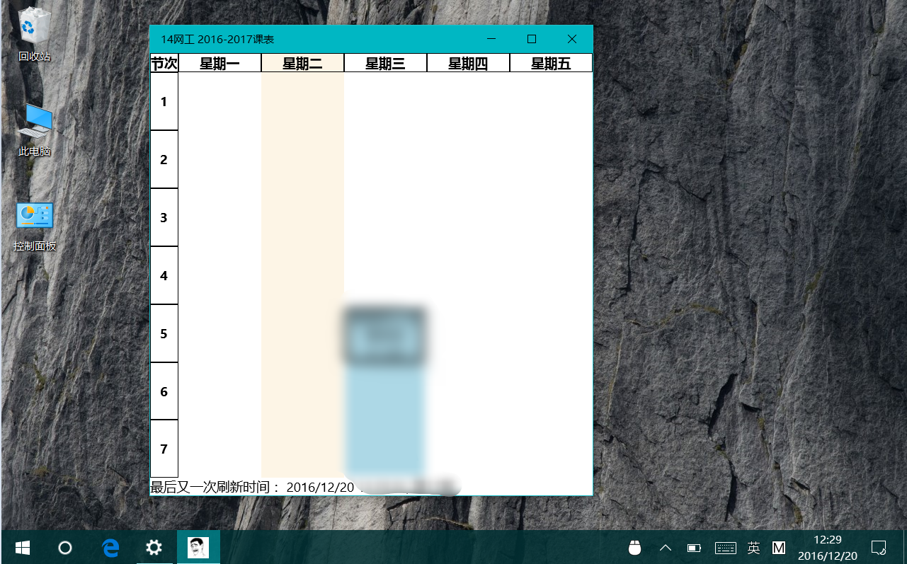

What
老夫有台VenuePro8，系统是win10，所以想把它作为UWP测试机，一直不知道怎么把应用部署到平板上。
最近才发现，原来vs2015早就有这个功能了，下面来讲一讲具体的操作。
How
- 首先在开发机上打开vs2015，打开项目
- 视线先切换到win10平板，cmd -> ipconfig 默默记下它的ip，打开设置 -> 更新和安全 -> 针对开发者 -> 打开“设备发现”
 - 接着出现一个配对按钮，点击。默默记下PIN码。
 - 视线切回开发机，右键vs菜单栏底部，勾上“标准”（默认那个是勾上的……）
 - 选择你需要的解决方案平台，然后部署设备切换到远程计算机
 - 输入平板的ip，再点击“选择”。
 - Ctrl+F5，开始执行项目。
- 编译过程中会弹出对话框，要求输入另一台主机的PIN，输入上面的找到的PIN即可。
 - 然后你的UWP项目就会在你的平板上安装了。(-_-||) 请无视我的low逼课程表UWP……
